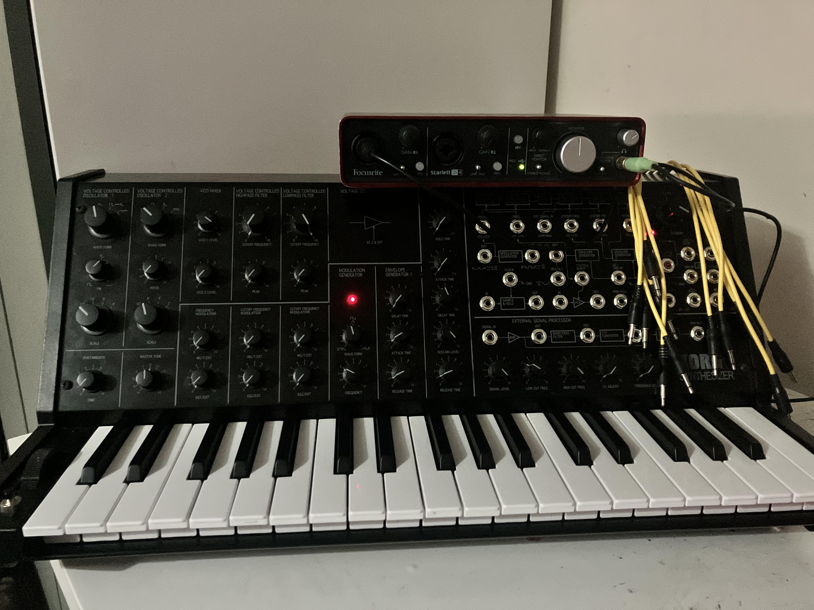

Synthesizers!

Here Is my KORG MS-20 mini, which I have used on all of my tracks and alot that havent been released. This synthesizer is one of the most famous, being used by the likes of THe Human League, Depeche Mode, Daft-Punk.
While it is monophonic, it features two oscillators,HPF and LPF and is semi modular with the MS-50 being KORGs only fully modular synthesizer.
After sometime, the MS-20 was re-released with a diffrent filter design meaning that its original sound was further enhanced, personally I prefer the older filter design however both are still very flexible.